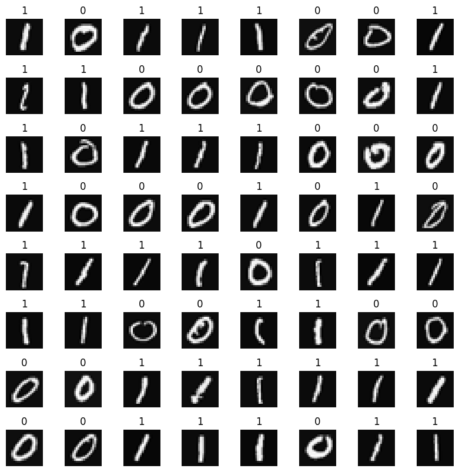

Practice Lab: Neural Networks for Handwritten Digit Recognition, Binary#
In this exercise, you will use a neural network to recognize the hand-written digits zero and one.
Outline#
NOTE: To prevent errors from the autograder, you are not allowed to edit or delete non-graded cells in this notebook . Please also refrain from adding any new cells. Once you have passed this assignment and want to experiment with any of the non-graded code, you may follow the instructions at the bottom of this notebook.
1 - Packages#
First, let’s run the cell below to import all the packages that you will need during this assignment.
numpy is the fundamental package for scientific computing with Python.
matplotlib is a popular library to plot graphs in Python.
tensorflow a popular platform for machine learning.
import numpy as np
import tensorflow as tf
from tensorflow.keras.models import Sequential
from tensorflow.keras.layers import Dense
import matplotlib.pyplot as plt
from autils import *
%matplotlib inline
import logging
logging.getLogger("tensorflow").setLevel(logging.ERROR)
tf.autograph.set_verbosity(0)
Tensorflow and Keras
Tensorflow is a machine learning package developed by Google. In 2019, Google integrated Keras into Tensorflow and released Tensorflow 2.0. Keras is a framework developed independently by François Chollet that creates a simple, layer-centric interface to Tensorflow. This course will be using the Keras interface.
2 - Neural Networks#
In Course 1, you implemented logistic regression. This was extended to handle non-linear boundaries using polynomial regression. For even more complex scenarios such as image recognition, neural networks are preferred.
2.1 Problem Statement#
In this exercise, you will use a neural network to recognize two handwritten digits, zero and one. This is a binary classification task. Automated handwritten digit recognition is widely used today - from recognizing zip codes (postal codes) on mail envelopes to recognizing amounts written on bank checks. You will extend this network to recognize all 10 digits (0-9) in a future assignment.
This exercise will show you how the methods you have learned can be used for this classification task.
2.2 Dataset#
You will start by loading the dataset for this task.
The
load_data()function shown below loads the data into variablesXandyThe data set contains 1000 training examples of handwritten digits \(^1\), here limited to zero and one.
Each training example is a 20-pixel x 20-pixel grayscale image of the digit.
Each pixel is represented by a floating-point number indicating the grayscale intensity at that location.
The 20 by 20 grid of pixels is “unrolled” into a 400-dimensional vector.
Each training example becomes a single row in our data matrix
X.This gives us a 1000 x 400 matrix
Xwhere every row is a training example of a handwritten digit image.
The second part of the training set is a 1000 x 1 dimensional vector
ythat contains labels for the training sety = 0if the image is of the digit0,y = 1if the image is of the digit1.
\(^1\) This is a subset of the MNIST handwritten digit dataset (http://yann.lecun.com/exdb/mnist/)
# load dataset
X, y = load_data()
2.2.1 View the variables#
Let’s get more familiar with your dataset.
A good place to start is to print out each variable and see what it contains.
The code below prints elements of the variables X and y.
print ('The first element of X is: ', X[0])
The first element of X is: [ 0.00000000e+00 0.00000000e+00 0.00000000e+00 0.00000000e+00
0.00000000e+00 0.00000000e+00 0.00000000e+00 0.00000000e+00
0.00000000e+00 0.00000000e+00 0.00000000e+00 0.00000000e+00
0.00000000e+00 0.00000000e+00 0.00000000e+00 0.00000000e+00
0.00000000e+00 0.00000000e+00 0.00000000e+00 0.00000000e+00
0.00000000e+00 0.00000000e+00 0.00000000e+00 0.00000000e+00
0.00000000e+00 0.00000000e+00 0.00000000e+00 0.00000000e+00
0.00000000e+00 0.00000000e+00 0.00000000e+00 0.00000000e+00
0.00000000e+00 0.00000000e+00 0.00000000e+00 0.00000000e+00
0.00000000e+00 0.00000000e+00 0.00000000e+00 0.00000000e+00
0.00000000e+00 0.00000000e+00 0.00000000e+00 0.00000000e+00
0.00000000e+00 0.00000000e+00 0.00000000e+00 0.00000000e+00
0.00000000e+00 0.00000000e+00 0.00000000e+00 0.00000000e+00
0.00000000e+00 0.00000000e+00 0.00000000e+00 0.00000000e+00
0.00000000e+00 0.00000000e+00 0.00000000e+00 0.00000000e+00
0.00000000e+00 0.00000000e+00 0.00000000e+00 0.00000000e+00
0.00000000e+00 0.00000000e+00 0.00000000e+00 8.56059680e-06
1.94035948e-06 -7.37438725e-04 -8.13403799e-03 -1.86104473e-02
-1.87412865e-02 -1.87572508e-02 -1.90963542e-02 -1.64039011e-02
-3.78191381e-03 3.30347316e-04 1.27655229e-05 0.00000000e+00
0.00000000e+00 0.00000000e+00 0.00000000e+00 0.00000000e+00
0.00000000e+00 0.00000000e+00 1.16421569e-04 1.20052179e-04
-1.40444581e-02 -2.84542484e-02 8.03826593e-02 2.66540339e-01
2.73853746e-01 2.78729541e-01 2.74293607e-01 2.24676403e-01
2.77562977e-02 -7.06315478e-03 2.34715414e-04 0.00000000e+00
0.00000000e+00 0.00000000e+00 0.00000000e+00 0.00000000e+00
0.00000000e+00 1.28335523e-17 -3.26286765e-04 -1.38651604e-02
8.15651552e-02 3.82800381e-01 8.57849775e-01 1.00109761e+00
9.69710638e-01 9.30928598e-01 1.00383757e+00 9.64157356e-01
4.49256553e-01 -5.60408259e-03 -3.78319036e-03 0.00000000e+00
0.00000000e+00 0.00000000e+00 0.00000000e+00 5.10620915e-06
4.36410675e-04 -3.95509940e-03 -2.68537241e-02 1.00755014e-01
6.42031710e-01 1.03136838e+00 8.50968614e-01 5.43122379e-01
3.42599738e-01 2.68918777e-01 6.68374643e-01 1.01256958e+00
9.03795598e-01 1.04481574e-01 -1.66424973e-02 0.00000000e+00
0.00000000e+00 0.00000000e+00 0.00000000e+00 2.59875260e-05
-3.10606987e-03 7.52456076e-03 1.77539831e-01 7.92890120e-01
9.65626503e-01 4.63166079e-01 6.91720680e-02 -3.64100526e-03
-4.12180405e-02 -5.01900656e-02 1.56102907e-01 9.01762651e-01
1.04748346e+00 1.51055252e-01 -2.16044665e-02 0.00000000e+00
0.00000000e+00 0.00000000e+00 5.87012352e-05 -6.40931373e-04
-3.23305249e-02 2.78203465e-01 9.36720163e-01 1.04320956e+00
5.98003217e-01 -3.59409041e-03 -2.16751770e-02 -4.81021923e-03
6.16566793e-05 -1.23773318e-02 1.55477482e-01 9.14867477e-01
9.20401348e-01 1.09173902e-01 -1.71058007e-02 0.00000000e+00
0.00000000e+00 1.56250000e-04 -4.27724104e-04 -2.51466503e-02
1.30532561e-01 7.81664862e-01 1.02836583e+00 7.57137601e-01
2.84667194e-01 4.86865128e-03 -3.18688725e-03 0.00000000e+00
8.36492601e-04 -3.70751123e-02 4.52644165e-01 1.03180133e+00
5.39028101e-01 -2.43742611e-03 -4.80290033e-03 0.00000000e+00
0.00000000e+00 -7.03635621e-04 -1.27262443e-02 1.61706648e-01
7.79865383e-01 1.03676705e+00 8.04490400e-01 1.60586724e-01
-1.38173339e-02 2.14879493e-03 -2.12622549e-04 2.04248366e-04
-6.85907627e-03 4.31712963e-04 7.20680947e-01 8.48136063e-01
1.51383408e-01 -2.28404366e-02 1.98971950e-04 0.00000000e+00
0.00000000e+00 -9.40410539e-03 3.74520505e-02 6.94389110e-01
1.02844844e+00 1.01648066e+00 8.80488426e-01 3.92123945e-01
-1.74122413e-02 -1.20098039e-04 5.55215142e-05 -2.23907271e-03
-2.76068376e-02 3.68645493e-01 9.36411169e-01 4.59006723e-01
-4.24701797e-02 1.17356610e-03 1.88929739e-05 0.00000000e+00
0.00000000e+00 -1.93511951e-02 1.29999794e-01 9.79821705e-01
9.41862388e-01 7.75147704e-01 8.73632241e-01 2.12778350e-01
-1.72353349e-02 0.00000000e+00 1.09937426e-03 -2.61793751e-02
1.22872879e-01 8.30812662e-01 7.26501773e-01 5.24441863e-02
-6.18971913e-03 0.00000000e+00 0.00000000e+00 0.00000000e+00
0.00000000e+00 -9.36563862e-03 3.68349741e-02 6.99079299e-01
1.00293583e+00 6.05704402e-01 3.27299224e-01 -3.22099249e-02
-4.83053002e-02 -4.34069138e-02 -5.75151144e-02 9.55674190e-02
7.26512627e-01 6.95366966e-01 1.47114481e-01 -1.20048679e-02
-3.02798203e-04 0.00000000e+00 0.00000000e+00 0.00000000e+00
0.00000000e+00 -6.76572712e-04 -6.51415556e-03 1.17339359e-01
4.21948410e-01 9.93210937e-01 8.82013974e-01 7.45758734e-01
7.23874268e-01 7.23341725e-01 7.20020340e-01 8.45324959e-01
8.31859739e-01 6.88831870e-02 -2.77765012e-02 3.59136710e-04
7.14869281e-05 0.00000000e+00 0.00000000e+00 0.00000000e+00
0.00000000e+00 1.53186275e-04 3.17353553e-04 -2.29167177e-02
-4.14402914e-03 3.87038450e-01 5.04583435e-01 7.74885876e-01
9.90037446e-01 1.00769478e+00 1.00851440e+00 7.37905042e-01
2.15455291e-01 -2.69624864e-02 1.32506127e-03 0.00000000e+00
0.00000000e+00 0.00000000e+00 0.00000000e+00 0.00000000e+00
0.00000000e+00 0.00000000e+00 0.00000000e+00 2.36366422e-04
-2.26031454e-03 -2.51994485e-02 -3.73889910e-02 6.62121228e-02
2.91134498e-01 3.23055726e-01 3.06260315e-01 8.76070942e-02
-2.50581917e-02 2.37438725e-04 0.00000000e+00 0.00000000e+00
0.00000000e+00 0.00000000e+00 0.00000000e+00 0.00000000e+00
0.00000000e+00 0.00000000e+00 0.00000000e+00 0.00000000e+00
0.00000000e+00 6.20939216e-18 6.72618320e-04 -1.13151411e-02
-3.54641066e-02 -3.88214912e-02 -3.71077412e-02 -1.33524928e-02
9.90964718e-04 4.89176960e-05 0.00000000e+00 0.00000000e+00
0.00000000e+00 0.00000000e+00 0.00000000e+00 0.00000000e+00
0.00000000e+00 0.00000000e+00 0.00000000e+00 0.00000000e+00
0.00000000e+00 0.00000000e+00 0.00000000e+00 0.00000000e+00
0.00000000e+00 0.00000000e+00 0.00000000e+00 0.00000000e+00
0.00000000e+00 0.00000000e+00 0.00000000e+00 0.00000000e+00
0.00000000e+00 0.00000000e+00 0.00000000e+00 0.00000000e+00
0.00000000e+00 0.00000000e+00 0.00000000e+00 0.00000000e+00
0.00000000e+00 0.00000000e+00 0.00000000e+00 0.00000000e+00
0.00000000e+00 0.00000000e+00 0.00000000e+00 0.00000000e+00
0.00000000e+00 0.00000000e+00 0.00000000e+00 0.00000000e+00
0.00000000e+00 0.00000000e+00 0.00000000e+00 0.00000000e+00]
print ('The first element of y is: ', y[0,0])
print ('The last element of y is: ', y[-1,0])
The first element of y is: 0
The last element of y is: 1
2.2.2 Check the dimensions of your variables#
Another way to get familiar with your data is to view its dimensions. Please print the shape of X and y and see how many training examples you have in your dataset.
print ('The shape of X is: ' + str(X.shape))
print ('The shape of y is: ' + str(y.shape))
The shape of X is: (1000, 400)
The shape of y is: (1000, 1)
2.2.3 Visualizing the Data#
You will begin by visualizing a subset of the training set.
In the cell below, the code randomly selects 64 rows from
X, maps each row back to a 20 pixel by 20 pixel grayscale image and displays the images together.The label for each image is displayed above the image
import warnings
warnings.simplefilter(action='ignore', category=FutureWarning)
# You do not need to modify anything in this cell
m, n = X.shape
fig, axes = plt.subplots(8,8, figsize=(8,8))
fig.tight_layout(pad=0.1)
for i,ax in enumerate(axes.flat):
# Select random indices
random_index = np.random.randint(m)
# Select rows corresponding to the random indices and
# reshape the image
X_random_reshaped = X[random_index].reshape((20,20)).T
# Display the image
ax.imshow(X_random_reshaped, cmap='gray')
# Display the label above the image
ax.set_title(y[random_index,0])
ax.set_axis_off()

2.3 Model representation#
The neural network you will use in this assignment is shown in the figure below.
This has three dense layers with sigmoid activations.
Recall that our inputs are pixel values of digit images.
Since the images are of size \(20\times20\), this gives us \(400\) inputs

The parameters have dimensions that are sized for a neural network with \(25\) units in layer 1, \(15\) units in layer 2 and \(1\) output unit in layer 3.
Recall that the dimensions of these parameters are determined as follows:
If network has \(s_{in}\) units in a layer and \(s_{out}\) units in the next layer, then
\(W\) will be of dimension \(s_{in} \times s_{out}\).
\(b\) will a vector with \(s_{out}\) elements
Therefore, the shapes of
W, andb, arelayer1: The shape of
W1is (400, 25) and the shape ofb1is (25,)layer2: The shape of
W2is (25, 15) and the shape ofb2is: (15,)layer3: The shape of
W3is (15, 1) and the shape ofb3is: (1,)
Note: The bias vector
bcould be represented as a 1-D (n,) or 2-D (1,n) array. Tensorflow utilizes a 1-D representation and this lab will maintain that convention.
2.4 Tensorflow Model Implementation#
Tensorflow models are built layer by layer. A layer’s input dimensions (\(s_{in}\) above) are calculated for you. You specify a layer’s output dimensions and this determines the next layer’s input dimension. The input dimension of the first layer is derived from the size of the input data specified in the model.fit statement below.
Note: It is also possible to add an input layer that specifies the input dimension of the first layer. For example:
tf.keras.Input(shape=(400,)), #specify input shape
We will include that here to illuminate some model sizing.
Exercise 1#
Below, using Keras Sequential model and Dense Layer with a sigmoid activation to construct the network described above.
# UNQ_C1
# GRADED CELL: Sequential model
model = Sequential(
[
tf.keras.Input(shape=(400,)), #specify input size
### START CODE HERE ###
### END CODE HERE ###
], name = "my_model"
)
model.summary()
Model: "my_model"
┏━━━━━━━━━━━━━━━━━━━━━━━━━━━━━━━━━━━━━━┳━━━━━━━━━━━━━━━━━━━━━━━━━━━━━┳━━━━━━━━━━━━━━━━━┓ ┃ Layer (type) ┃ Output Shape ┃ Param # ┃ ┡━━━━━━━━━━━━━━━━━━━━━━━━━━━━━━━━━━━━━━╇━━━━━━━━━━━━━━━━━━━━━━━━━━━━━╇━━━━━━━━━━━━━━━━━┩ └──────────────────────────────────────┴─────────────────────────────┴─────────────────┘
Total params: 0 (0.00 B)
Trainable params: 0 (0.00 B)
Non-trainable params: 0 (0.00 B)
Expected Output (Click to Expand)
The `model.summary()` function displays a useful summary of the model. Because we have specified an input layer size, the shape of the weight and bias arrays are determined and the total number of parameters per layer can be shown. Note, the names of the layers may vary as they are auto-generated.Model: "my_model"
_________________________________________________________________
Layer (type) Output Shape Param #
=================================================================
dense (Dense) (None, 25) 10025
_________________________________________________________________
dense_1 (Dense) (None, 15) 390
_________________________________________________________________
dense_2 (Dense) (None, 1) 16
=================================================================
Total params: 10,431
Trainable params: 10,431
Non-trainable params: 0
_________________________________________________________________
Click for hints
As described in the lecture:model = Sequential(
[
tf.keras.Input(shape=(400,)), # specify input size (optional)
Dense(25, activation='sigmoid'),
Dense(15, activation='sigmoid'),
Dense(1, activation='sigmoid')
], name = "my_model"
)
# UNIT TESTS
from public_tests import *
test_c1(model)
---------------------------------------------------------------------------
AssertionError Traceback (most recent call last)
Cell In[9], line 4
1 # UNIT TESTS
2 from public_tests import *
----> 4 test_c1(model)
File C:\Github\Coursera_Materials\coursera_notes\MLS\C2_W1\public_tests.py:8, in test_c1(target)
7 def test_c1(target):
----> 8 assert len(target.layers) == 3, \
9 f"Wrong number of layers. Expected 3 but got {len(target.layers)}"
10 assert target.input.shape.as_list() == [None, 400], \
11 f"Wrong input shape. Expected [None, 400] but got {target.input.shape.as_list()}"
12 i = 0
AssertionError: Wrong number of layers. Expected 3 but got 0
The parameter counts shown in the summary correspond to the number of elements in the weight and bias arrays as shown below.
L1_num_params = 400 * 25 + 25 # W1 parameters + b1 parameters
L2_num_params = 25 * 15 + 15 # W2 parameters + b2 parameters
L3_num_params = 15 * 1 + 1 # W3 parameters + b3 parameters
print("L1 params = ", L1_num_params, ", L2 params = ", L2_num_params, ", L3 params = ", L3_num_params )
We can examine details of the model by first extracting the layers with model.layers and then extracting the weights with layerx.get_weights() as shown below.
[layer1, layer2, layer3] = model.layers
#### Examine Weights shapes
W1,b1 = layer1.get_weights()
W2,b2 = layer2.get_weights()
W3,b3 = layer3.get_weights()
print(f"W1 shape = {W1.shape}, b1 shape = {b1.shape}")
print(f"W2 shape = {W2.shape}, b2 shape = {b2.shape}")
print(f"W3 shape = {W3.shape}, b3 shape = {b3.shape}")
Expected Output
W1 shape = (400, 25), b1 shape = (25,)
W2 shape = (25, 15), b2 shape = (15,)
W3 shape = (15, 1), b3 shape = (1,)
xx.get_weights returns a NumPy array. One can also access the weights directly in their tensor form. Note the shape of the tensors in the final layer.
print(model.layers[2].weights)
The following code will define a loss function and run gradient descent to fit the weights of the model to the training data. This will be explained in more detail in the following week.
model.compile(
loss=tf.keras.losses.BinaryCrossentropy(),
optimizer=tf.keras.optimizers.Adam(0.001),
)
model.fit(
X,y,
epochs=20
)
To run the model on an example to make a prediction, use Keras predict. The input to predict is an array so the single example is reshaped to be two dimensional.
prediction = model.predict(X[0].reshape(1,400)) # a zero
print(f" predicting a zero: {prediction}")
prediction = model.predict(X[500].reshape(1,400)) # a one
print(f" predicting a one: {prediction}")
The output of the model is interpreted as a probability. In the first example above, the input is a zero. The model predicts the probability that the input is a one is nearly zero. In the second example, the input is a one. The model predicts the probability that the input is a one is nearly one. As in the case of logistic regression, the probability is compared to a threshold to make a final prediction.
if prediction >= 0.5:
yhat = 1
else:
yhat = 0
print(f"prediction after threshold: {yhat}")
Let’s compare the predictions vs the labels for a random sample of 64 digits. This takes a moment to run.
import warnings
warnings.simplefilter(action='ignore', category=FutureWarning)
# You do not need to modify anything in this cell
m, n = X.shape
fig, axes = plt.subplots(8,8, figsize=(8,8))
fig.tight_layout(pad=0.1,rect=[0, 0.03, 1, 0.92]) #[left, bottom, right, top]
for i,ax in enumerate(axes.flat):
# Select random indices
random_index = np.random.randint(m)
# Select rows corresponding to the random indices and
# reshape the image
X_random_reshaped = X[random_index].reshape((20,20)).T
# Display the image
ax.imshow(X_random_reshaped, cmap='gray')
# Predict using the Neural Network
prediction = model.predict(X[random_index].reshape(1,400))
if prediction >= 0.5:
yhat = 1
else:
yhat = 0
# Display the label above the image
ax.set_title(f"{y[random_index,0]},{yhat}")
ax.set_axis_off()
fig.suptitle("Label, yhat", fontsize=16)
plt.show()
2.5 NumPy Model Implementation (Forward Prop in NumPy)#
As described in lecture, it is possible to build your own dense layer using NumPy. This can then be utilized to build a multi-layer neural network.

Exercise 2#
Below, build a dense layer subroutine. The example in lecture utilized a for loop to visit each unit (j) in the layer and perform the dot product of the weights for that unit (W[:,j]) and sum the bias for the unit (b[j]) to form z. An activation function g(z) is then applied to that result. This section will not utilize some of the matrix operations described in the optional lectures. These will be explored in a later section.
# UNQ_C2
# GRADED FUNCTION: my_dense
def my_dense(a_in, W, b, g):
"""
Computes dense layer
Args:
a_in (ndarray (n, )) : Data, 1 example
W (ndarray (n,j)) : Weight matrix, n features per unit, j units
b (ndarray (j, )) : bias vector, j units
g activation function (e.g. sigmoid, relu..)
Returns
a_out (ndarray (j,)) : j units
"""
units = W.shape[1]
a_out = np.zeros(units)
### START CODE HERE ###
### END CODE HERE ###
return(a_out)
# Quick Check
x_tst = 0.1*np.arange(1,3,1).reshape(2,) # (1 examples, 2 features)
W_tst = 0.1*np.arange(1,7,1).reshape(2,3) # (2 input features, 3 output features)
b_tst = 0.1*np.arange(1,4,1).reshape(3,) # (3 features)
A_tst = my_dense(x_tst, W_tst, b_tst, sigmoid)
print(A_tst)
Expected Output
[0.54735762 0.57932425 0.61063923]
Click for hints
As described in the lecture:def my_dense(a_in, W, b, g):
"""
Computes dense layer
Args:
a_in (ndarray (n, )) : Data, 1 example
W (ndarray (n,j)) : Weight matrix, n features per unit, j units
b (ndarray (j, )) : bias vector, j units
g activation function (e.g. sigmoid, relu..)
Returns
a_out (ndarray (j,)) : j units
"""
units = W.shape[1]
a_out = np.zeros(units)
for j in range(units):
w = # Select weights for unit j. These are in column j of W
z = # dot product of w and a_in + b
a_out[j] = # apply activation to z
return(a_out)
Click for more hints
def my_dense(a_in, W, b, g):
"""
Computes dense layer
Args:
a_in (ndarray (n, )) : Data, 1 example
W (ndarray (n,j)) : Weight matrix, n features per unit, j units
b (ndarray (j, )) : bias vector, j units
g activation function (e.g. sigmoid, relu..)
Returns
a_out (ndarray (j,)) : j units
"""
units = W.shape[1]
a_out = np.zeros(units)
for j in range(units):
w = W[:,j]
z = np.dot(w, a_in) + b[j]
a_out[j] = g(z)
return(a_out)
# UNIT TESTS
test_c2(my_dense)
The following cell builds a three-layer neural network utilizing the my_dense subroutine above.
def my_sequential(x, W1, b1, W2, b2, W3, b3):
a1 = my_dense(x, W1, b1, sigmoid)
a2 = my_dense(a1, W2, b2, sigmoid)
a3 = my_dense(a2, W3, b3, sigmoid)
return(a3)
We can copy trained weights and biases from Tensorflow.
W1_tmp,b1_tmp = layer1.get_weights()
W2_tmp,b2_tmp = layer2.get_weights()
W3_tmp,b3_tmp = layer3.get_weights()
# make predictions
prediction = my_sequential(X[0], W1_tmp, b1_tmp, W2_tmp, b2_tmp, W3_tmp, b3_tmp )
if prediction >= 0.5:
yhat = 1
else:
yhat = 0
print( "yhat = ", yhat, " label= ", y[0,0])
prediction = my_sequential(X[500], W1_tmp, b1_tmp, W2_tmp, b2_tmp, W3_tmp, b3_tmp )
if prediction >= 0.5:
yhat = 1
else:
yhat = 0
print( "yhat = ", yhat, " label= ", y[500,0])
Run the following cell to see predictions from both the Numpy model and the Tensorflow model. This takes a moment to run.
import warnings
warnings.simplefilter(action='ignore', category=FutureWarning)
# You do not need to modify anything in this cell
m, n = X.shape
fig, axes = plt.subplots(8,8, figsize=(8,8))
fig.tight_layout(pad=0.1,rect=[0, 0.03, 1, 0.92]) #[left, bottom, right, top]
for i,ax in enumerate(axes.flat):
# Select random indices
random_index = np.random.randint(m)
# Select rows corresponding to the random indices and
# reshape the image
X_random_reshaped = X[random_index].reshape((20,20)).T
# Display the image
ax.imshow(X_random_reshaped, cmap='gray')
# Predict using the Neural Network implemented in Numpy
my_prediction = my_sequential(X[random_index], W1_tmp, b1_tmp, W2_tmp, b2_tmp, W3_tmp, b3_tmp )
my_yhat = int(my_prediction >= 0.5)
# Predict using the Neural Network implemented in Tensorflow
tf_prediction = model.predict(X[random_index].reshape(1,400))
tf_yhat = int(tf_prediction >= 0.5)
# Display the label above the image
ax.set_title(f"{y[random_index,0]},{tf_yhat},{my_yhat}")
ax.set_axis_off()
fig.suptitle("Label, yhat Tensorflow, yhat Numpy", fontsize=16)
plt.show()
2.6 Vectorized NumPy Model Implementation (Optional)#
The optional lectures described vector and matrix operations that can be used to speed the calculations. Below describes a layer operation that computes the output for all units in a layer on a given input example:

We can demonstrate this using the examples X and the W1,b1 parameters above. We use np.matmul to perform the matrix multiply. Note, the dimensions of x and W must be compatible as shown in the diagram above.
x = X[0].reshape(-1,1) # column vector (400,1)
z1 = np.matmul(x.T,W1) + b1 # (1,400)(400,25) = (1,25)
a1 = sigmoid(z1)
print(a1.shape)
You can take this a step further and compute all the units for all examples in one Matrix-Matrix operation.
 The full operation is $\mathbf{Z}=\mathbf{XW}+\mathbf{b}$. This will utilize NumPy broadcasting to expand $\mathbf{b}$ to $m$ rows. If this is unfamiliar, a short tutorial is provided at the end of the notebook.
The full operation is $\mathbf{Z}=\mathbf{XW}+\mathbf{b}$. This will utilize NumPy broadcasting to expand $\mathbf{b}$ to $m$ rows. If this is unfamiliar, a short tutorial is provided at the end of the notebook.
Exercise 3#
Below, compose a new my_dense_v subroutine that performs the layer calculations for a matrix of examples. This will utilize np.matmul().
Note: This function is not graded because it is discussed in the optional lectures on vectorization. If you didn’t go through them, feel free to click the hints below the expected code to see the code. You can also submit the notebook even with a blank answer here.
# UNQ_C3
# UNGRADED FUNCTION: my_dense_v
def my_dense_v(A_in, W, b, g):
"""
Computes dense layer
Args:
A_in (ndarray (m,n)) : Data, m examples, n features each
W (ndarray (n,j)) : Weight matrix, n features per unit, j units
b (ndarray (1,j)) : bias vector, j units
g activation function (e.g. sigmoid, relu..)
Returns
A_out (tf.Tensor or ndarray (m,j)) : m examples, j units
"""
### START CODE HERE ###
### END CODE HERE ###
return(A_out)
X_tst = 0.1*np.arange(1,9,1).reshape(4,2) # (4 examples, 2 features)
W_tst = 0.1*np.arange(1,7,1).reshape(2,3) # (2 input features, 3 output features)
b_tst = 0.1*np.arange(1,4,1).reshape(1,3) # (1,3 features)
A_tst = my_dense_v(X_tst, W_tst, b_tst, sigmoid)
print(A_tst)
Expected Output
[[0.54735762 0.57932425 0.61063923]
[0.57199613 0.61301418 0.65248946]
[0.5962827 0.64565631 0.6921095 ]
[0.62010643 0.67699586 0.72908792]]
Click for hints
In matrix form, this can be written in one or two lines. Z = np.matmul of A_in and W plus b
A_out is g(Z)
Click for code
def my_dense_v(A_in, W, b, g):
"""
Computes dense layer
Args:
A_in (ndarray (m,n)) : Data, m examples, n features each
W (ndarray (n,j)) : Weight matrix, n features per unit, j units
b (ndarray (j,1)) : bias vector, j units
g activation function (e.g. sigmoid, relu..)
Returns
A_out (ndarray (m,j)) : m examples, j units
"""
Z = np.matmul(A_in,W) + b
A_out = g(Z)
return(A_out)
# UNIT TESTS
test_c3(my_dense_v)
The following cell builds a three-layer neural network utilizing the my_dense_v subroutine above.
def my_sequential_v(X, W1, b1, W2, b2, W3, b3):
A1 = my_dense_v(X, W1, b1, sigmoid)
A2 = my_dense_v(A1, W2, b2, sigmoid)
A3 = my_dense_v(A2, W3, b3, sigmoid)
return(A3)
We can again copy trained weights and biases from Tensorflow.
W1_tmp,b1_tmp = layer1.get_weights()
W2_tmp,b2_tmp = layer2.get_weights()
W3_tmp,b3_tmp = layer3.get_weights()
Let’s make a prediction with the new model. This will make a prediction on all of the examples at once. Note the shape of the output.
Prediction = my_sequential_v(X, W1_tmp, b1_tmp, W2_tmp, b2_tmp, W3_tmp, b3_tmp )
Prediction.shape
We’ll apply a threshold of 0.5 as before, but to all predictions at once.
Yhat = (Prediction >= 0.5).astype(int)
print("predict a zero: ",Yhat[0], "predict a one: ", Yhat[500])
Run the following cell to see predictions. This will use the predictions we just calculated above. This takes a moment to run.
import warnings
warnings.simplefilter(action='ignore', category=FutureWarning)
# You do not need to modify anything in this cell
m, n = X.shape
fig, axes = plt.subplots(8, 8, figsize=(8, 8))
fig.tight_layout(pad=0.1, rect=[0, 0.03, 1, 0.92]) #[left, bottom, right, top]
for i, ax in enumerate(axes.flat):
# Select random indices
random_index = np.random.randint(m)
# Select rows corresponding to the random indices and
# reshape the image
X_random_reshaped = X[random_index].reshape((20, 20)).T
# Display the image
ax.imshow(X_random_reshaped, cmap='gray')
# Display the label above the image
ax.set_title(f"{y[random_index,0]}, {Yhat[random_index, 0]}")
ax.set_axis_off()
fig.suptitle("Label, Yhat", fontsize=16)
plt.show()
You can see how one of the misclassified images looks.
fig = plt.figure(figsize=(1, 1))
errors = np.where(y != Yhat)
random_index = errors[0][0]
X_random_reshaped = X[random_index].reshape((20, 20)).T
plt.imshow(X_random_reshaped, cmap='gray')
plt.title(f"{y[random_index,0]}, {Yhat[random_index, 0]}")
plt.axis('off')
plt.show()
2.7 Congratulations!#
You have successfully built and utilized a neural network.
2.8 NumPy Broadcasting Tutorial (Optional)#
In the last example, \(\mathbf{Z}=\mathbf{XW} + \mathbf{b}\) utilized NumPy broadcasting to expand the vector \(\mathbf{b}\). If you are not familiar with NumPy Broadcasting, this short tutorial is provided.
\(\mathbf{XW}\) is a matrix-matrix operation with dimensions \((m,j_1)(j_1,j_2)\) which results in a matrix with dimension \((m,j_2)\). To that, we add a vector \(\mathbf{b}\) with dimension \((1,j_2)\). \(\mathbf{b}\) must be expanded to be a \((m,j_2)\) matrix for this element-wise operation to make sense. This expansion is accomplished for you by NumPy broadcasting.
Broadcasting applies to element-wise operations.
Its basic operation is to ‘stretch’ a smaller dimension by replicating elements to match a larger dimension.
More specifically: When operating on two arrays, NumPy compares their shapes element-wise. It starts with the trailing (i.e. rightmost) dimensions and works its way left. Two dimensions are compatible when
they are equal, or
one of them is 1
If these conditions are not met, a ValueError: operands could not be broadcast together exception is thrown, indicating that the arrays have incompatible shapes. The size of the resulting array is the size that is not 1 along each axis of the inputs.
Here are some examples:

The graphic below describes expanding dimensions. Note the red text below:

The graphic above shows NumPy expanding the arguments to match before the final operation. Note that this is a notional description. The actual mechanics of NumPy operation choose the most efficient implementation.
For each of the following examples, try to guess the size of the result before running the example.
a = np.array([1,2,3]).reshape(-1,1) #(3,1)
b = 5
print(f"(a + b).shape: {(a + b).shape}, \na + b = \n{a + b}")
Note that this applies to all element-wise operations:
a = np.array([1,2,3]).reshape(-1,1) #(3,1)
b = 5
print(f"(a * b).shape: {(a * b).shape}, \na * b = \n{a * b}")

a = np.array([1,2,3,4]).reshape(-1,1)
b = np.array([1,2,3]).reshape(1,-1)
print(a)
print(b)
print(f"(a + b).shape: {(a + b).shape}, \na + b = \n{a + b}")
This is the scenario in the dense layer you built above. Adding a 1-D vector \(b\) to a (m,j) matrix.

Please click here if you want to experiment with any of the non-graded code.
Important Note: Please only do this when you've already passed the assignment to avoid problems with the autograder.
- On the notebook’s menu, click “View” > “Cell Toolbar” > “Edit Metadata”
- Hit the “Edit Metadata” button next to the code cell which you want to lock/unlock
- Set the attribute value for “editable” to:
- “true” if you want to unlock it
- “false” if you want to lock it
- On the notebook’s menu, click “View” > “Cell Toolbar” > “None”
Here's a short demo of how to do the steps above: